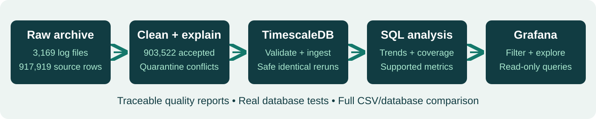

SWITCH SQUAD · SCC 2026 · HISTORICAL HPC DATA
From cluster logs
to evidence.
A reproducible pipeline for exploring reported CPU usage, node availability and job backlog—without hiding uncertainty.
903,522
accepted cluster snapshots
70.97%
mean reported CPU value
2017–25
historical source coverage
The question
How does reported cluster activity change over time, and which observations can we trust?
Our approach
Read both source formats, validate measurements, preserve missing values and quarantine conflicting timestamps. Load accepted snapshots into TimescaleDB, then explore SQL results in Grafana.
What the data shows
- Mean reported CPU: 70.97% across 894,438 CPU-present snapshots.
- Highest daily mean with ≥200 CPU samples: 98.63%, 26 June 2025 (288 samples).
- Peak observed queued-job count: 2,536. This is backlog, not job waiting time.
A working interactive view

Actual system screenshot, 16 November 2026. Choose a date range and hourly, daily or weekly buckets. Source wall-clock time is preserved; the displayed UTC axis is only a plotting convention.
Quality stays visible
Of 917,919 nonblank source rows: 903,522 accepted, 12,489 extra identical duplicates, 1,907 conflicting variants and one rejected row. All 937 conflicting timestamps were quarantined.

Verified, not assumed
All 903,522 rows and all 12 fields match the cleaned CSV.
43 tests + 13 subtests pass with real TimescaleDB, including repeat import and rollback recovery.
36 panel-query checks cover three aggregation settings. Chrome rendering and bucket selection were tested.
What we cannot claim
These are whole-cluster snapshots. No per-node CPU, memory, job completions or individual waiting times can be calculated.
9,084 CPU values are missing; 212 exceed 100%. CPU semantics and source timezone are unconfirmed. Averages weight snapshots, not missing elapsed time.
What we learned
Preserve evidence, test real transactions, show coverage alongside trends, and make uncertainty part of the interface.